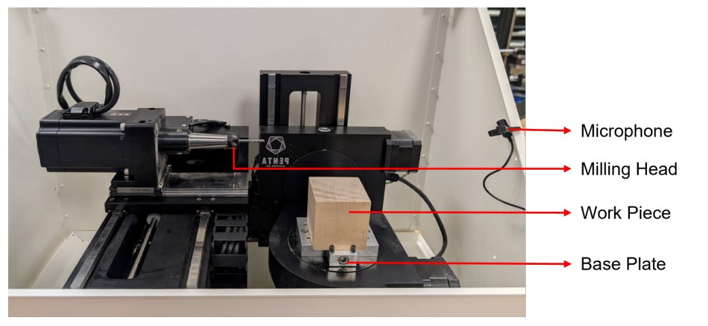

The problem
Machine-audio models for digital twins are hard to compare when they are trained on ad-hoc recordings. A useful benchmark covers the operating range systematically and records exactly which process condition produced each sound.
Approach
- Process: facing operations on wood blocks with a Datron single-flute end mill (1/8 in shank) on a Pocket NC V2-10 desktop CNC.
- Sensing: a Boya BY-M1 condenser microphone mounted inside the machine’s protective cover, recording at 22.05 kHz.
- Factors: spindle speed at 5,500, 7,000 and 8,500 RPM, and feed per tooth at 0.0006, 0.0008 and 0.001 in.
- Held constant: step-down (0.082 in) and step-over (0.070 in), which made little audible difference when varied.
- Design: full 3 × 3 factorial, nine conditions, each run twice.
Results
≈ 4 hoursof labeled machining audio
≈ 30 minper process condition
≈ 51,840one-second frames (50% overlap) for training
The dataset is the training and test data for both my complex-valued autoencoder (2025) and the VQ-VAE sensor codec (2026). It captures spindle harmonics, tool-engagement frequencies, cutting noise and the transients of tool entry, exit and spindle start/stop.
Figures


My role
I designed the experiment, set up the machine and microphone, ran the cuts and curated the recordings.